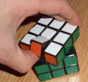

还原顶层棱块
在前面的步骤中，我们已经还原了魔方的底层和中层，但在底层和中层都各留了一个的缺角位置（图1-1）。我们将利用这两个缺角位置还原顶层四个棱块和中层剩余的一个棱块（图1-2）。
| 图1-1 | 图1-2 |
至此，所有棱块均正确归位。
基本方法
我们仍将使用还原中层棱块所用的换棱法来还原顶层棱块，即：
R Ux R'
F' Ux F
这种换棱法的实质是将三个棱块的位置依次轮换，只不过在还原中层棱块时，重点关注的是将棱块从顶层带回中层的功能。而现在还原顶层棱块，关注的重点是将位于中层缺角位置的棱块推上顶层的功能。我们应注意换棱过程中的朝向对应关系，根据实际需要恰当选择以顺转右面或逆转前面开始进行换棱，将棱块以正确的朝向推上顶层归位。同时我们还注意到，顶层被推开的棱块将会出现在被带回棱块原来所在的位置上，兼顾这一特点也可以提高还原效率。
图2-1是还原顶层棱块的实例。底层和中层的缺角位置已上下对齐，橙白棱块目前位于中层缺角位置。我们首先要确定该棱块的目标位置。由于顶层随时会被转动，很难像还原中层棱块那样确定出顶层棱块的绝对目标位置，我们一般是采用相对位置进行定位的，即根据侧面配色按顶面顺转方向依次为红色、绿色、橙色、蓝色的特点，确定出各棱块的相对目标位置。比如我们可以选择朝向正确的红白棱块作为基准棱块，然后根据侧面配色中橙色是在红色的对面特点，可以确定出橙白棱块的相对目标位置是在基准棱块的对面，也就是后顶棱位。因为目前橙白棱块的白色一面是朝前的，所以我们下一步将以顺转右面开始进行换棱。而顺转右面会将棱块推至右顶棱位，因此我们先要顺转顶面（图2-2），将相对目标位置移至这个位置上；再顺转右面将橙白上推至相对目标位置（图2-3）；然后逆转顶面（图2-4），推开正确归位的橙白棱块，并将另一个未还原的绿白棱块替换进来；最后逆转右面复原（图3-5），将绿白棱块带回中层缺角位置，为下一步还原作准备。
| 原始状态 | U | R | U' | R' |
| 图2-1 | 图2-2 | 图2-3 | 图2-4 | 图2-5 |
接下来还原被带回中层的绿白棱块。这时仍然要以红白棱块为基准，否则顶层棱块位置会发生错乱。根据侧面配色中绿色是在红色的顶面顺转方向特点，可以确定出绿白棱块的相对目标位置是在基准棱块的顺转方向，也就是左顶棱位。我们下一步将以逆转前面开始换棱，因此先逆转顶面（图2-6），将相对目标位置移至下一步所要推上去的前顶棱位；再逆转前面（图2-7），将绿白棱块上推至相对目标位置；然后转动顶面180°（图2-8），将顶层仅剩未还原的红绿中层棱块替换进来；最后顺转前面复原（图2-9），将红绿棱块带回中层缺角位置归位。在此过程中，我们会发现蓝白棱块也“自动”归位了。
| U' | F' | U² | F | 动画演示 |
| 图2-6 | 图2-7 | 图2-8 | 图2-9 | 图2-10 |
操作建议
我们在使用换棱法将棱块推上顶层的同时，还应规划好所要带回的棱块，否则将会多走弯路。这里给出几点建议：
（1）不要带回已经正确归位的棱块。因为这将是多余的操作，下一步仍需将它推回到原来位置上去。
（2）在顶层棱块尚未全部正确归位之前，不要带回属于中层的棱块。因为中层缺角位置是还原顶层棱块的工作区，提前带回中层棱块将是多余的操作，下一步仍需将它推回顶层，以便腾出缺角位置还原其他顶层棱块。如果别无选择，我们宁可先将顶层棱块以正确的朝向暂时推至其他位置上，以后再伺机还原。
（3）应优先带回朝向错误的顶层棱块。这是因为朝向错误的顶层棱块只有通过带回到中层才能将朝向调整过来；而仅仅是位置不对应的棱块还有可能在还原其他棱块的过程中“自动”归位。
特殊情况
在还原顶层棱块的过程中，可能会遇到以下特殊情况：
1、如图3-1所示，顶层已有三个棱块正确归位，还剩下红白棱块尚未还原，其位置已经正确了，但朝向却是错误的。为了调整顶层棱块朝向，我们必须先通过换棱将其带回中层，再重新以正确的朝向推上去。比如我们可以先逆转前面（图3-2），将红绿棱块暂时推上顶层；再顺转顶面（图3-3）、顺转前面（图3-4）带回红白棱块。
| 原始状态 | F' | U | F |
| 图3-1 | 图3-2 | 图3-3 | 图3-4 |
我们发现目前绿白棱块暂时被替换到错误的位置上，此处应是红白棱块的相对目标位置。因此接下来我们就使用相应的换棱法将红白棱块推至正确位置（图3-5~图3-6），并将红绿棱块重新带回中层归位（图3-7~图3-8）。
| U' | R | U' | R' | 动画演示 |
| 图3-5 | 图3-6 | 图3-7 | 图3-8 | 图3-9 |
2、如图4-1所示，顶层还剩下红白棱块和红绿棱块尚未还原。目前绿白棱块的相对目标位置为前顶棱位置，但如果直接将其推上替换红白棱块、并带回红绿棱块，就会出现类似图3-1所示的“两棱换向”特殊情况。按照上面的操作建议，目前应优先带回朝向错误的红白棱块，而不是急着带回红绿中层棱块；否则就会因陷入特殊情况而多走弯路。因此我们应先将绿白棱块推上替换红绿棱块（图4-2~图4-3），以便带回朝向错误的红白棱块（图4-4~图4-5）。
| 原始状态 | U | F' | U' | F | 动画演示 |
| 图4-1 | 图4-2 | 图4-3 | 图4-4 | 图4-5 | 图4-6 |
虽然目前绿白棱块的位置是错误的，但其朝向正确。我们只要再进行一次换棱，将红白棱块、绿白棱块、红绿棱块依次轮换，绿白棱块也会“自动”归位。
3、如图5-1所示，顶层已有三个棱块正确归位，还剩下红绿棱块和位于中层缺角位置的红白棱块未还原；这两个棱块正好互换了位置。我们似乎陷入一个“尴尬”的局面：如果顺转右面将红白棱块推至红绿棱块所在的位置，那么顶层四个棱块都将正确归位，这时就没有未还原的棱块可带回了；而如果将红白棱块推至其他位置，比如推至绿白所在的位置（图5-2~图5-3），并带回红绿棱块（图5-4~图5-5），那么中层棱块将正确归位，但顶层却出现了两个棱块互换位置的情况。
| 原始状态 | U' | R | U | R' | 动画演示 |
| 图5-1 | 图5-2 | 图5-3 | 图5-4 | 图5-5 | 图5-6 |
究其原因，是因为我们一直默认顶层三个棱块已处于正确归位的状态，并作为基准棱块；而问题恰恰就出在这个位置基准上。事实上，我们所使用换棱法是将三个棱块的位置依次轮换，而三个棱块轮换又相当于棱块两两互换两次。比如图5-1中的绿白棱块与红白棱块互换一次，然后绿白棱块再与红绿棱块互换一次，就会变成图5-5的状态。也就是说，我们所使用换棱法只能将棱块两两互换偶数次，无法仅对两个棱块进行互换。因此看上去已经正确归位的那三个棱块其实并非“位置正确”。为了摆脱这种“尴尬”状态，我们将顶面转动90°，也就是使顶层四个棱块的位置依次轮换。这相当于棱块两两互换了三次，从而补偿了红绿棱块与红白棱块的单次互换，最终达到棱块两两互换偶数次的要求。
回头再看刚才的实例（图6-1），我们可以简单地逆转顶面（图6-2），这时绿白棱块的位置其实是错误的，它应是红白棱块的相对目标位置，而绿白棱块、橙白棱块和蓝白棱块都要依次后退一个位置。我们顺转右面（图6-3），将红白棱块正确归位；再逆转顶面（图6-4）、逆转右面复原（图6-5），将橙白棱块带回中层。这一方面是因为可以就近操作，另一方面是当逆转右面复原时，绿白棱块正好可以“自动”归位，从而省去了单独对该棱块的还原操作。
| 原始状态 | U' | R | U' | R' |
| 图6-1 | 图6-2 | 图6-3 | 图6-4 | 图6-5 |
我们再以正确归位的红白棱块为基准，橙白棱块的相对目标位置应是目前蓝白棱块所在的位置。因此我们再次使用换棱法将红白棱块推上去替换蓝白棱块（图6-6~图6-7），并将红绿棱块带回中层（图6-8~图6-9）。
| U' | R | U' | R' | 动画演示 |
| 图6-6 | 图6-7 | 图6-8 | 图6-9 | 图6-10 |
从上述过程可以看出，前后两次换棱连贯在一起，正好对貌似“正确归位”的三个顶层棱块依次进行了调换。
顶层基准棱块
在还原顶层棱块时，如果我们任意选择基准棱块，那么就有50%的可能会遇到类似图5-1所示的“两棱互换”特殊情况。正如上面所介绍的，我们的换棱法只能将棱块两两互换偶数次，因此我们所选择的基准应使所有未还原棱块的互换次数满足此要求。下面就来看几个实例：
1、如图7-1所示，根据侧面配色的相对顺序关系，顶层只有相对的蓝白棱块和绿白棱块之间的相对位置顺序是正确的。如果我们选择它们作为基准棱块，那么顶层相对位置错误的橙白棱块和红绿棱块、以及位于中层缺角位置红白棱块正好构成三个棱块位置依次的轮换状态，满足换棱法的要求。这样橙白棱块所在的位置就是红白棱块的相对目标位置，因此我们转动顶面180°（图7-2），然后以顺转右面开始换棱（图7-3），将红白棱块推至其相对目标位置，并带回红绿棱块（图7-4~图7-5）。
| 原始状态 | U² | R | U² | R' | 动画演示 |
| 图7-1 | 图7-2 | 图7-3 | 图7-4 | 图7-5 | 图7-6 |
2、如图8-1所示，根据侧面配色的相对顺序关系，顶层没有任何两个棱块之间的相对位置顺序是正确的，但橙白棱块和绿白棱块之间的相对位置顺序正好是相反的。如果我们选择另一个顶层红白棱块作为基准棱块，那么橙白棱块和绿白棱块就处于位置互换的状况；而顶层剩下的红绿棱块和位于中层缺角位置蓝白棱块必然也是处于位置互换的状况，满足棱块两两互换偶数次的要求。这样蓝白棱块的相对目标位置就是红白基准棱块逆转方向的右顶棱位，因此我们就以顺转右面开始换棱（图8-2），将蓝白棱块推至此相对目标位置，并带回相对位置错误的绿白棱块（图8-3~图8-4）。
| 原始状态 | R | U | R' |
| 图8-1 | 图8-2 | 图8-3 | 图8-4 |
接下来我们顺转顶面（图8-5），再一次换棱（图8-6~图8-8），将剩下的三个棱块正确归位。
| U | R | U | R' | 动画演示 |
| 图8-5 | 图8-6 | 图8-7 | 图8-8 | 图8-9 |
3、如图9-1所示，顶层棱块中相邻的蓝白棱块和红白棱块之间的相对位置顺序是正确的，而相邻的橙白棱块和绿白棱块之间的相对位置顺序是相反的。如果我们选择位置顺序正确的棱块作为基准棱块，就会面临仅有两个位置顺序相反的棱块需互换的局面。这时我们应选择位置顺序相反的棱块之一，比如绿白棱块作为基准棱块，这样剩下的三个顶层棱块就正好处于位置依次轮换的状态。由于目前红绿中层棱块已经位于中层缺角位置，我们将不得不“空”做一次换棱，以带回一个顶层棱块，这里我们应优先带回朝向错误的红白棱块。而另一方面，被红绿棱块推开的棱块，将会出现在红白棱块目前所在的位置，因此我们先顺转顶面（图9-2），这样顺转右面推开蓝白棱块（图9-3），在换棱之后蓝白棱块也正确归位（图9-4~图9-5）。
| 原始状态 | U | R | U' | R' |
| 图9-1 | 图9-2 | 图9-3 | 图9-4 | 图9-5 |
接下来我们再一次换棱（图9-6~图9-8），将剩下的三个棱块正确归位。
| F' | U² | F | 动画演示 |
| 图9-6 | 图9-7 | 图9-8 | 图9-9 |
4、如图10-1所示，顶层棱块中相对的绿白棱块和蓝白棱块之间的相对位置顺序是正确的，而相对的橙白棱块和红白棱块之间的相对位置顺序也是正确，但两对棱块之间的相对位置却是错误的。不管我们选择哪一对棱块作为基准棱块，都会面临仅有另一对棱块需互换的局面。由于情况较复杂，我们先进行一次换棱（图10-2~图10-4），将朝向错误的红白棱块带回中层缺角位置。
| 原始状态 | F' | U | F |
| 图10-1 | 图10-2 | 图10-3 | 图10-4 |
现在情况就比较明朗了，顶面仅有橙白棱块和绿白棱块之间的相对位置顺序是相反的。按照上面所介绍的方法，我们当然可以选择另一个顶层蓝白棱块作为基准棱块，则红白棱块的相对目标位置就位于左顶棱位。但由于蓝白棱块的朝向是错误的，如果我们真的选它作为基准棱块，那么它必须在原位进行一次朝向调整，这将多费一次换棱操作。我们不如将此棱块基准转动180°，也就是将红白棱块的相对目标位置定位于右顶棱位。然后通过换棱，将红白棱块推至此相对目标位置（图10-5），并带回朝向错误的蓝白棱块（图10-6~图10-7）。这时，刚刚推上去的红白棱块就成为基准棱块。
| R | U' | R' |
| 图10-5 | 图10-6 | 图10-7 |
接下来我们逆转顶面（图10-8），再一次换棱（图10-9~图10-11），将剩下的三个棱块正确归位。
| U' | F' | U | F | 动画演示 |
| 图10-8 | 图10-9 | 图10-10 | 图10-11 | 图10-12 |
安装错误
如果你遇到类似图11的情况，即魔方上只有唯一一个棱块的朝向是错误的，那么当你将其朝向调整正确时，又会出现另一个朝向错误的棱块。出现这种情况的原因，是你的魔方安装错了。
| 图11 |
一般来说，只要将棱块所在层面转动45°，就能很方便地撬出棱块，有些魔方甚至可以用大拇指很轻松地抠出棱块（图12）。调整好棱块朝向后，在同样的状态下将棱块按压回去。不过，你不必急着马上就拆装魔方，因为如果你的魔方没有安装正确，那么在后续的还原过程中还有可能出现其他错误。因此你可以先保持现状，就当这个棱块已经还原了；待所有的问题都出现后，再一并处理。
 |
| 图12 |